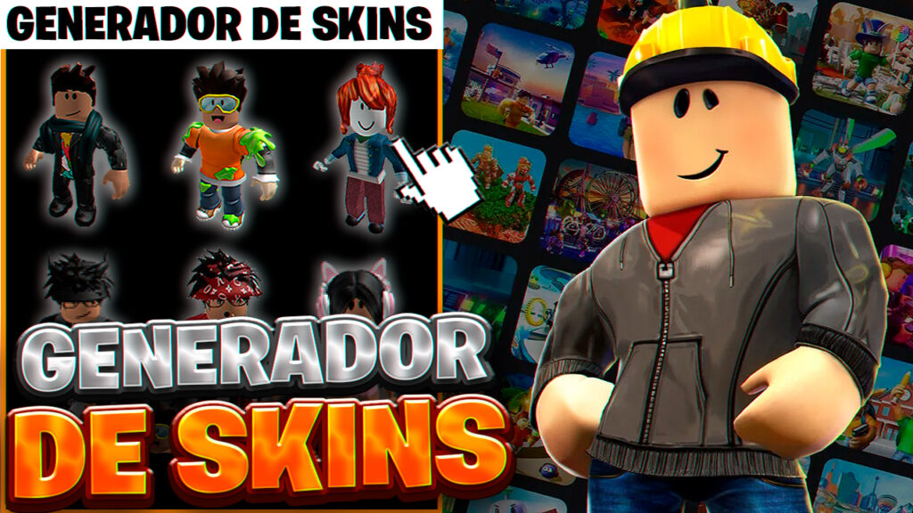

Skins Épicas en Roblox 2025: La Guía Definitiva para Apariencias Gratis y Exclusivas
Descubre las mejores formas de conseguir skins épicas sin gastar dinero 💎

skins épicas es la apariencias exclusivas de Roblox y permite equipar a tu avatar con estilos únicos, trajes y efectos visuales. Muchos jugadores buscan formas seguras de obtener skins épicas sin gastar dinero, y aquí te mostraremos cómo hacerlo de manera legal en 2025. 🚀
💡 Métodos oficiales para ganar skins épicas
- 🎨 Crear y vender ropa o accesorios en el catálogo de Roblox.
- 🎮 Desarrollar juegos y monetizarlos con pases de juego o productos.
- 💳 Roblox Premium: suscripción que te da skins épicas mensuales.
- 🏆 Eventos oficiales de Roblox que ofrecen skins épicas o ítems intercambiables.
🆓 Trucos infalibles para ganar skins épicas gratis
No necesitas gastar dinero si aprovechas estas opciones:
- Participar en concursos y sorteos de la comunidad.
- Unirte a grupos de Roblox que reparten skins épicas a sus miembros.
- Probar eventos con recompensas en juegos populares.
- Canjear códigos promocionales de Roblox.
⚠️ Cuidado: evita caer en estafas de falsas skins
Recuerda que no existen generadores mágicos de skins épicas. Nunca compartas tu contraseña ni instales programas extraños. Las únicas formas seguras son las oficiales dentro de Roblox.
🚀 Guía rápida para ganar skins épicas
- Accede a tu cuenta de Roblox.
- Explora el menú de Avatar Shop o crea un juego propio.
- Vende ropa, accesorios o habilita pases de juego.
- Promociona tu contenido en grupos o redes sociales.
- Disfruta tus skins épicas obtenidos de forma segura. 🎉